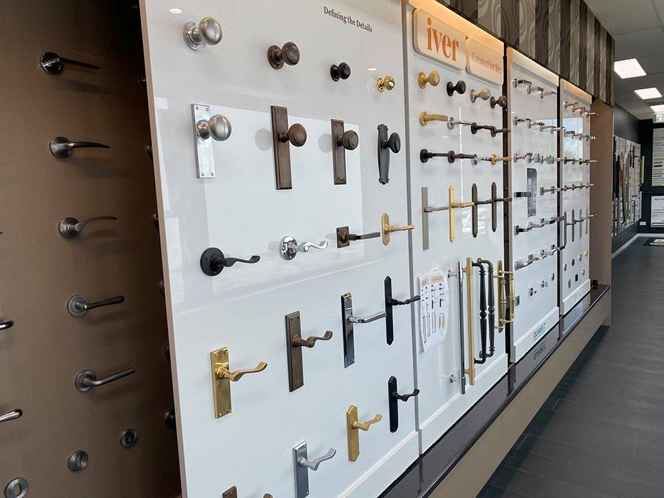
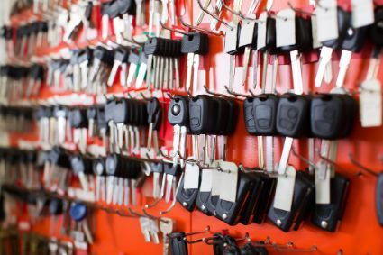

On this page
AT A GLANCE
At SPL Security Solutions, we understand the importance of maintaining the safety and security of your property.
Get A Free Quote Now!

All Your Locksmith Solutions Under One Roof
At SPL Security Solutions, we understand the importance of maintaining the safety and security of your property. Our comprehensive range of locksmith services includes key cutting, restricted key systems, safe installation, lock replacements, state-of-the-art access control and so much more. Whether you require a simple lock change or a more complex security set up, our team has the expertise and technology to provide unbeatable solutions.
We pride ourselves on providing reliable and professional services, working closely with you from consultation through to installation and maintenance, ensuring your property remains safe and secure at all times. Our goal is to provide peace of mind to our Hope Island community, knowing we're there when you need us.
For more information on our comprehensive range of locksmith services, call (07) 5588 8111.
Hope Island homes are safer with our residential locksmith services including high-end lock installations, efficient repairs and preventative rekeying. Our comprehensive key duplication service lessens the chances of losing keys or being unable to gain entry, while our emergency lockout assistance offers fast solutions for those unexpected moments.
Our commercial locksmith services are here to provide businesses in Hope Island with efficient and reliable security solutions. We offer high-security lock installations, master key systems and access control measures to regulate who has access to different areas of your property. Our team is also available for 24/7 emergency assistance and can conduct security assessments.
Our automotive locksmith services in Hope Island offer drivers reliable solutions for all their key-related needs. From key replacements and duplications to transponder programming and ignition repair or replacement, our team has the expertise to assist you. With our 24/7 emergency assistance, you can be sure help is always available when you need it.
We provide advanced restricted key systems that offer a reliable and secure way to control access to designated areas. By preventing unauthorised duplication of keys, our solutions provide an efficient security measure for businesses and organisations in Hope Island. Custom designed to meet specific access needs, these systems ensure maximum protection against unwanted entry.
Our safe selection in Hope Island offers a high level of security against theft, fire and in some cases water damage. We offer various sizes and locking mechanisms to cater to different needs with additional services such as installation, maintenance and emergency unlocking assistance. Protect your valuables, business assets and confidential documents with our comprehensive safe solutions.
What level of protection do you need for your property in Hope Island? Our team can help you answer this question and design a tailored security system to meet these specific needs. Our solutions include CCTV cameras, alarm systems, access control and intercoms for comprehensive surveillance and monitoring capabilities. We also offer professional installation services and ongoing maintenance.
Hope Island properties can rely on our lock hardware including deadlocks, mortice locks and keypad systems. These products provide a dependable layer of protection for doors and entryways.
In Hope Island, we offer door hardware such as robust hinges, sleek door handles and high-quality closers. These solutions are designed to enhance both security and door functionality.
We offer a broad range of architectural door hardware, from fire-rated solutions to sleek closers and elegant handles, catering to both traditional and contemporary spaces in Hope Island.
24/7 Emergency Locksmith Services
At SPL Security Solutions, we understand the urgency of lock-related emergencies. That's why our team provides 24/7 emergency locksmith services to Hope Island and surrounding areas. Whether you're locked out of your home or need urgent lock repairs after a break-in, our team can assist with prompt response times and professional solutions.
In the case of attempted or actual intrusion, our team can assess your property and provide necessary repairs or replacements to secure your entry points. Our mobile vans are equipped with the latest tools and technology, enabling us to provide on the spot lock replacements, rekeying and more.

Contact Details
24/7 Emergency Locksmiths or Security Tech


Trading Hours
Retail Shop
Frequently Asked Questions
-
What is the difference between rekeying and master keying?
Rekeying involves changing the internal mechanism of a lock so a new key can operate it without altering the lock body. Master keying, however, involves configuring multiple locks to be opened by a single master key, while also maintaining individual keys for each lock.
-
What are the signs a lock has been tampered with?
Signs of tampering may include noticeable marks around the lock or keyhole, scratches or dents on the lock itself or the lock not functioning smoothly. If you suspect tampering, consider a security assessment by a professional locksmith.
Locksmith & Security Solutions Gold Coast, Brisbane & Northern NSW